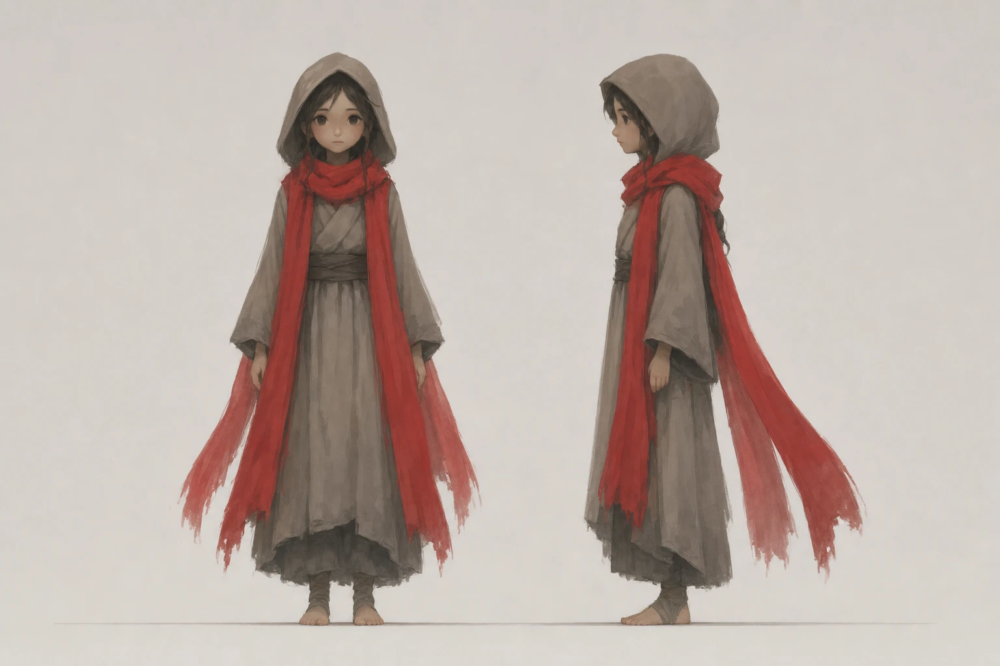

violet-turnaround.png

- origin
- generated
- tool
- gen 0.1.0
- model
- gpt-image-2 (openai)
- prompt
- Character turnaround sheet, front view and right-side view standing on the same ground line at the same scale, of Violet: Violet, a slight traveller about 4.5 heads tall in a long hooded robe in muted warm gray (#8a8078) with a darker hem, bare feet or soft wraps, and a long scarf (three segments, ends trailing 1.5× head length) that is the only saturated element on the character: gray when no color is active, the active color otherwise. Stylized adventure-game proportions, genuinely 4.5 heads tall (large head, short slight body, like a young traveller, not a realistic adult figure), simplified face with soft blurred features and no linework, no eyelashes, no makeup detail. Painted, soft-edged, matte flat brushwork like GRIS and Planet of Lana concept art, no outlines, no anime line work, no pixel art, plain warm gray background, no text.
- input
- assets/concept/scarf-openai.png
- license
- proprietary
sha256 f2f023962adfdaf5707dabdf84846ff4ed803aa0e5a61e13972453ddf163c36a